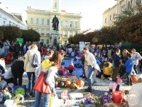
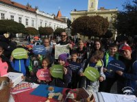
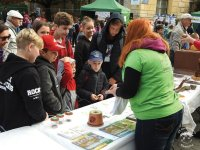
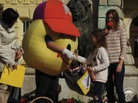

7. jesenný deň zdravia s Rozmarínkou
Dňa 11. 10. 2019 sa žiaci Rozmarínky opäť presunuli na Klapkovo námestie v Komárne, aby si rozšírili a prezentovali svoje environmentálne povedomie v rámci 7. ročníka celoškolského podujatia Jesenný deň zdravia s Rozmarínkou. Tento ročník bol zameraný na alarmujúcu problematiku životného prostredia.
Novinkou tohto ročníka bolo aj to, že nám zdravý obedový balíček pripravili ujovia a tety kuchárky z našej vlastnej školskej kuchyne... a nezabudli k nemu pribaliť aj osobné prekvapenie.
Téma ZDRAVÁ PLANÉTA ZEM upriamila pozornosť na čiastkové problémy životného prostredia, ktoré zasahujú v prvom rade do nášho života. Možno ste už počuli, že jedna osoba vyprodukuje v priemere 480 kg odpadu za rok, ale málokto sa zamýšľa nad tým, že iba 18% tohto odpadu sa recykluje alebo, že 1 tona zberového papiera zachráni 17 stromov. Globálne environmentálne problémy sú realitou súčasného sveta a je potrebné o nich hovoriť. Práve preto bol tento ročník, venovaný podtéme "Zdravá planéta Zem", taký dôležitý.
Žiaci boli pri príprave a realizácii projektu motivovaní aj celoročnou témou školy "Nemusíš byť vždy hrdinom, ale vždy môžeš zostať človekom."
A tak už od skorého rána spolu s učiteľmi a rodičmi na Námestí generála Klapku v Komárne tvorili triedne mozaiky, ktoré obkolesovali pomyselnú planétu Zem. Každá bola vytvorená z prírodnín a odzrkadľovala ich schopnosť výtvarne uchopiť čiastkovú tému nášho environmentálneho povedomia. Po slávnostnom otvorení a príhovore pani riaditeľky sa žiaci, ktorí boli rozdelení do vekovo zmiešaných skupín, učili ďalej. Prechádzali rôznymi stanovišťami, ktoré boli vytvorené za pomoci partnerov podujatia z nášho regiónu a žiakov deviateho ročníka, čím sme aj tentoraz posilňovali rovesnícke vzdelávanie.
Žiaci a obyvatelia Komárna mali možnosť postrehnúť rôznorodé aktivity: pokusy Vedeckého tímu Rozmarínky, pohybové aktivity, ochutnávky zdravých pochutín, aktivity zamerané na zdravé životné prostredie, zaujímavosti zo života včiel, tvorba hračiek z recyklovateľných materiálov, premietanie ekofilmu, kvízy a mnohé ďalšie...
V centre mesta sme si dokonca vyskúšali, aké je to byť súčasťou nenásilného protestu Die – in Komárno, ktorý zorganizovala organizácia Human Health Institute. Prostredníctvom neho sme demonštrovali skutočnosť existencie jedinej obývateľnej planéty, na ktorej žijeme a ako sa k nej správame. Touto formou sme sa na chvíľu sami stali súčasťou masového vymierania druhov a existenčnej hrozby pre človeka.
Vystavené mozaiky triednych kolektívov skrášľovali námestie po celý deň a zároveň súťažili o rôznorodé ceny s charakterom ďalšieho zážitkového učenia.
Aj tento rok bol Jesenný deň zdravia interaktívnou formou vyučovania mimo školských lavíc, ktorým je Rozmarínka už povestná. Nosné myšlienky podujatia mali upriamiť pozornosť zúčastnených na alarmujúce fakty ohľadom environmentalistiky. Žiaci boli súčasťou intenzívneho vyučovacieho procesu, z ktorého bolo zrejmé, že v prírode neexistujú odmeny ani tresty – sú tu len dôsledky. Príroda je oproti nám vo výhode – môže existovať aj bez nás, ale my bez nej nie.
Bezprostredné reakcie žiakov na podujatie:
Tami: "Tento rok to bolo iné. Robili sme na kartóne, nie na stoloch. Čiže sme si mohli vyskúšať iný spôsob. Aktivity boli zábavné. Najlepšie bolo občerstvenie, kino a vlasový salón. Každý rok je náš jesenný deň zdravia niečím iný ako minulý rok. Každoročne máme aktivity v skupinách /rovesnícke vzdelávanie/. Aktivity sa mi páčia, sú zaujímavé a náučné. Veľmi sa mi páčilo aj občerstvenie - bolo na ňom zaujímavé to, že ho sami žiaci pripravili."
Lea: "Tento rok bol podľa mňa Jesenný deň zdravia veľmi zaujímavý. Veľmi sa mi páčili témy a hlavne forma, akou sme pracovali – vykladali obrázky z prírodných materiálov. Oceňujem našu školskú jedáleň, ktorá nám pripravila chutné obedy. Veľmi sa mi páčili aktivity. Boli zaujímavé a podnetné, mám pocit, že čím sme starší, tým viac informácií si vieme zapamätať. Veľmi sa mi páčil program, všetci sme sa zabávali a pohopkávali."
Projekt finančne podporili: MESTO KOMÁRNO
Ďalej by sme sa chceli touto cestou srdečne poďakovať partnerom projektu:
- Inštitút pre ľudské zdravie (Human Health Institute) Komárno
- SOŠOaS Budovateľská 32, Komárno
- Združenie na pomoc ľuďom s mentálnym postihnutím v Komárne
- ROS Komárno
- Centrum voľného času Komárno
- Knižnica J. Szinnyeho Komárno
- Včelár Ondrej Streda
- RÚVZ v Komárne
- SEV Dropie Zemianska Olča
- Jedáleň ZŠ Rozmarínováa
- Rodičia a rodinní príslušníci žiakov ZŠ Rozmarínová a ďalší priatelia školy
Mgr. Jana Krajanová
a žiačky študentského časopisu Rozovinky: Bianka Červená, Lili Takácsová
ZŠ Rozmarínová ul. 1 v Komárne